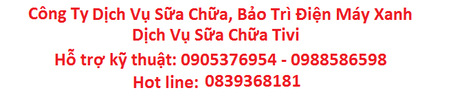

Dịch vụ sửa chữa tivi hỗ trợ đến kiểm tra tại nhà, Quý Khách hàng cần sửa chữa tivi tất cả các hãng PANASONIC, SAMSUNG, TOSHIBA, SONY, SHARP, LG, TCL, .vv…….tại TP.HCM. Nhưng Quý Khách không có thời gian đem tivi đến các trung tâm để kiểm tra hay sửa chữa. Công ty dịch vụ chúng tôi có đội ngũ kỹ thuật sẽ hỗ trợ đến tận nhà Quý khách kiểm tra tình trạng tivi sửa chữa tận nhà hoặc hỗ trợ vận chuyển về trung tâm.
Trong quá trình sử dụng tivi không thể tránh khỏi việc gặp những sự cố về kỹ thuật như mất nguồn, hỏng cáp, hình ảnh hiển thị kém, âm thanh chập chờn hay sự cố lớn hơn như chập cháy đèn hình, nổ cầu chì, lỗi phần mềm, rơi vỡ ngoài ý muốn ..vv….Đội ngũ kỹ thuật viên của chúng tôi luôn sẵng sàng hỗ trợ kiểm tra nhận sửa chữa tận nhà khách hàng nhanh chóng và chuyên nghiệp.
⇒ Chất lượng phục vụ cộng với sự thuận tiện cho khách hàng là phương châm của chúng tôi, phục hồi lại tình trạng bình thường nhưng điều quan trọng hơn đó là giúp Khách Hàng sử dụng được lâu bền .
*Sửa tivi hiện tượng hư nguồn:
1. + Không có đèn báo nguồn.
2. + Hiện tượng Bật máy 2 – 5 phút mới chạy.
3. + Hiện tượng chạy 2-5 phút tự tắt.
4. + Hiện tượng đèn báo nguồn báo lỗi 2, 8 nháy.
5. + Hiện tượng Rơ le kêu lạch cạch.
*Sửa tivi hiện tượng hư cao áp:
1. + Hiện tượng máy chạy 2 -5 giây tự tắt.
2. + Hiện tượng màn hình thấy ảnh tối.
3. + Máy chạy có tiếng, không hình.
4. + Máy chạy 1 – 15 phút mất hình, có tiếng.
5. + Hiện tượng đèn nguồn báo lỗi 4, 6, 7 nháy.
*Sửa tivi hiện tượng hư bo khiển:
1. + Hiện tượng không dò được kênh
2. + Không nhận tín hiệu cổng AV, HDMI…
3. + Đèn báo nguồn luôn ở trạng thái mầu vàng.
4. + Từ đèn xanh chuyển sang đèn đỏ báo lỗi 2, 3, 8,13 nháy.
5. + Không nhận khiển từ xa, Phím cơ không có tác dụng.
*Sửa tivi hiện tượng hư panel:
1. + Hiện tượng trắng màn hình.
2. + Ảnh thấy mờ xương và âm ảnh.
3. + Màn sáng không hình.
4. + Kẻ ngang, kẻ dọc màn hình.
5. + Bị bóng chữ, chồng 2 hình.
6. + Hiện tượng đèn báo nguồn báo lỗi 5, 13 nháy.
7. + Màn hình rộp, gợn lóa hình trắng như bóng mây.
Dịch vụ sửa chữa chúng tôi sẽ báo giá cho khách hàng trước khi sửa chữa, thường xuyên liên lạc với khách hàng để thông báo tiến trình sửa chữa hoặc thay thế linh kiện. Đặc biệt các linh kiện được chúng tôi thay thế đều có xuất xứ rõ ràng, và có thời gian bảo hành dài hạn, Quý khách hàng có thể an tâm sử dụng dịch vụ.
Quý Khách cần tư vấn dịch vụ sửa chữa, hãy gọi ngay cho chúng tôi khi quý khách cần để được phục vụ tận tình chu đáo. hoặc Quý Khách có thể chụp hình tình trạng tivi gửi qua Email hoặc Zalo: ¬ Email : dichvusuchuadienmayxanh@yahoo.com ¬ Zalo : 08.9814.2564 ⇒ Kỹ thuật sẽ trực tiếp hỗ trợ – giải đáp thắc mắc cho quý khách.
Lưu ý:
- Nhân viên kỹ thuật không tự ý báo giá ngoài khung giá quy định trên website hoặc bản giá nội bộ đã được phê duyệt vì vậy quý khách có thể hoàn toàn tin tưởng. Trường hợp quý khách muốn xác nhận lại báo giá với công ty trước khi đồng ý, vui lòng gọi Tổng đài: 028.3860.0621
- Đối với một số hư hỏng không thể tiến hành tại chỗ do thiếu dụng cụ, phụ tùng thay thế hoặc buột phải mang về trung tâm kiểm tra – xử lý. Quý khách kiểm tra thẻ nhân viên – nhân viên giao nhận hoặc sửa chữa sẽ lập phiếu biên nhận ghi rõ thời gian – có mộc công ty giao cho quý khách.